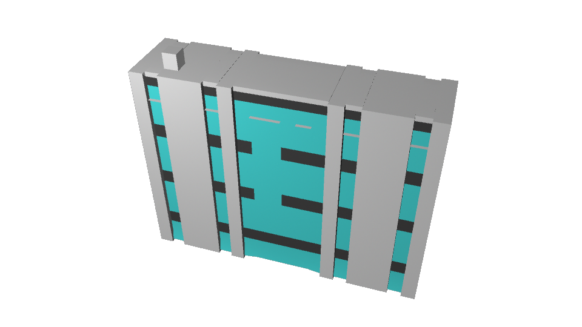

Maya

優雅に泳ぐ魚の映像
この画像に登場する魚や岩、地面なども作成しました。
魚は最初、4本の線から始まり、形状を与えてテクスチャを貼っていった
水中を表すために光の加減を調整するのが大変難しかったです。
そしてこの映像映すためのカメラの移動も数フレームごとに調整していたので、滑らかな映像を創り出せました。

まーるいかわいいサラリーマン
この人は東京ゲームショウへ向けて、ゲームの世界観に合った人間を制作した。
胸元を見てみると、小さくネクタイがしてあるのがわかると思う。
このネクタイは三角錐を人の体に沿うように形を変形させて作った。
大きな樹木
この木の幹は一本の円柱のみから創り出しました。
葉っぱの部分は世界観に合うように調整した

大学の校舎
この校舎はある大学の一号館を模した建築物です。
一つのキューブのみを編集し、この建物を組み上げました。
窓の色、建物の突起部分もエッジから伸ばされている